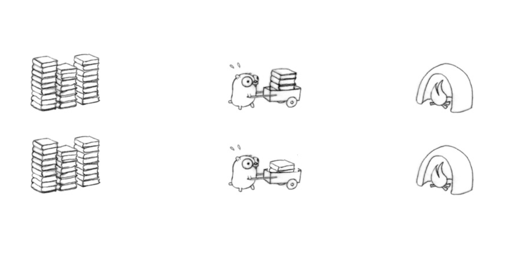

虽然网络协议栈提供了丰富的功能，让我们可以方便的实现网络的数据交流，但是有时候我们对协议栈的性能还是不是那么满意的，前几篇文章我也介绍了通过XDP等技术高效处理网络数据的方式，但是毕竟XDP还没有那么广泛的应用，使用起来也还不是那么简单，如果我们通过编程语言提供的标准库来实现数据的读写，还怎么能提高性能呢？今天就介绍一种方式，批量的读写数据包。

直观上看，我们也能理解批收发网络包比单个的收发网络包更有效，因为在普通的单个收发包的逻辑中，每次收发一个包都至少需要一次系统调用(Send/SendTo, Read/RecvFrom)，而批处理方式下，一次系统调用就可以处理多个网络包，所以从理论分析来看，批处理方式更有效。不仅仅网络处理，很多消息队列、数据存储，也都会通过批处理方式获得更好的性能。
在这篇文章中，我并没有对批量处理网络包和普通处理单个网络包的性能做一个测试(或许5.1假期的时候我能补上)，有人做了简单的测试,并没有发现批处理带来的好处，当然我猜测他的测试可能过于单一或者简单，cloudflare也做过百万pps的测试，批处理方式性能还是很好的。我想你在评估这项技术的时候也根据你的场景做一下性能测试，这样才能确保这项技术是否适合采用。
我所说的批量处理收发包的技术是通过系统调用sendmmsg和recvmmsg来实现的，目前只支持Linux系统。正如man手册上介绍的，它们是在socket上收发多个数据包的系统调用:
- sendmmsg - send multiple messages on a socket:
int sendmmsg(int sockfd, struct mmsghdr *msgvec, unsigned int vlen,int flags); - recvmmsg - receive multiple messages on a socket:
int recvmmsg(int sockfd, struct mmsghdr *msgvec, unsigned int vlen,int flags, struct timespec *timeout);
这两个系统调用开始加入到Linux的版本是3.0, glibc自2.14版本开始加入。OpenBSD 7.2也加入了这个系统调用。
注意recvmmsg是一个blocking系统调用，直到收到vlen个消息或者超时才会返回。
这两个系统调用是对sendmsg和recvmsg的扩展。如果你以前研究过，你可能直到对于网络数据的读写有多个系统调用send、sendto、sendmsg、 sendmmsg和read、recv、、
man send和man recv分别对它们做了详细的介绍。
- send：send函数用于发送一个数据包，可以是TCP连接或UDP数据报。类似
write,只不过write没有flag设置。 - sendto：sendto函数与send函数类似，但它可以在发送数据包时指定接收方的地址。如果是面向连接的协议如TCP, dest_addr和addrlen可以忽略，否则如UDP,需要指定这两个参数。
- sendmsg：sendmsg函数可以发送多个缓冲区的数据。同时，它还可以指定一个或多个附加数据。需要指定
- sendmmsg：sendmmsg函数可以在一次调用中发送多个消息，每个消息可以有一个或多个缓冲区。这可以减少系统调用的次数，从而提高效率。
同样的，接收用的系统调用主要有下面的几个：
- recv: recv 是最基本的接收函数，从套接字接收数据并返回接收到的字节数。它接收的数据没有附加的信息（比如目标地址等）。类似
read,只不过read没有flag设置。 - recvfrom: recvfrom 也是从套接字接收数据，但它还会返回发送者的地址信息，适合用于UDP等有地址信息的协议。
- recvmsg: recvmsg 可以在接收数据的同时接收其他相关的数据信息（比如接收的数据是否截断、发送方的IP地址等）。它支持多个数据缓冲区的接收，也支持控制消息（cmsg）的接收。
- recvmmsg: recvmmsg 是 recvmsg 的多消息版本，可以同时接收多个消息，适合高并发、高吞吐量的场景。
对应到标准库的conn的方法上，以UDPConn为例：
- conn.Write(_) : 使用
write系统调用 - conn.WriteTo(_, _) : 使用
sendto系统调用 - conn.WriteToUDP(_, _) : 使用
sendto系统调用 - conn.WriteMsgUDP(_, _, _) : 使用
sendmsg系统调用 - conn.WriteMsgUDPAddrPort(_, _, _) : 使用
sendmsg系统调用 - conn.Read(nil): 使用
read系统调用 - conn.ReadFrom(nil):使用
recvfrom系统调用 - conn.ReadMsgUDP(nil, nil):使用
recvmsg系统调用 - conn.ReadMsgUDPAddrPort(nil, nil):使用
recvmsg系统调用 - conn.ReadFromUDP(nil):使用
recvmsg系统调用 - conn.ReadFromUDPAddrPort(nil):使用
recvmsg系统调用
遗憾的是， Go标准库中并没有提供对系统调用sendmmsg和recvmmsg的包装，这个系统调用在syscall甚至没有定义，所以像net.UDPConn还没有对应的批处理方法。2021年，在go issue#45886中bradfitz提出为*UDPConn增加批读写消息的提案，这个提案在2022年11月10日被Russ Cox批准为接受状态，但是目前这个提案处理依然还没有人领取去实现。
但是，go的扩展库golang.org/x/net提供了 ReadBatch和WriteBatch的方法，可以提供批量读写消息的方法，它实际是对系统调用readmmsg和sendmmsg的封装。
当然你也可以类似的实现对系统调用的封装：
|
|
不过目前它们都有一个问题，类似ReadBatch是blocking的，如果没有足够的消息被接收到，当前线程会被阻塞住。线程数很少的情况下没有问题，但是如果线程数很多，就会有资源不足和性能的问题。bradfitz在提案中期望能和标准库的net poller集成，这样就避免线程被阻塞中，所以你可以期待这个功能早日能实现。
那么，我们就看看目前最好的实现批量读写UDP消息的方式吧，也就是利用ipv4包的方式。
使用 ipv4.PacketConn
我们可以利用ipv4.PacketConn的方式，它提供了ReadBatch和WriteBatch方法：
- func (c *PacketConn) ReadBatch(ms []Message, flags int) (int, error): 读取一批消息，它返回读取的消息数，最大为len(ms)
- func (c *PacketConn) WriteBatch(ms []Message, flags int) (int, error): 写一批消息，它返回写成功的消息数
接下来，我们以一个UDP客户端和服务端的例子，演示批量读写的能力。
下面是客户端的代码。它首先使用标准库创建的了一个*net.UDPConn的实例，并使用ipv4.NewPacketConn转换成*ipv4.PacketConn。
接下来准备了10条消息，需要准备成ipv4.Message类型。如果你在产品中使用，最好使用Pool池化这些对象，这个例子比较简单，就没有考虑性能的问题，值演示批量读写的功能。
准备好数据后就调用WriteBatch批量写入，这里也每考虑如果有的每写成功怎么处理，假定都写入成功了。
接下来读取回包，假定服务器都要把每一条消息返回，所以这里如果批量读没有读取完，还会接着读，直到把所有的消息都读取回来。
|
|
服务端的代码类似，先批量接收消息，再把消息原样批量写回：
|
|
运行server和client,可以在client看到10条消息都收到了:
|
|
使用 ipv4.Conn
其实使用ipv4.Conn也能实现批量读写，底层是一样的。这个类型底层是golang.org/x/net/internal/socket.Conn,它包含下面的批量读写消息的方法：
- SendMsgs(ms []Message, flags int) (int, error): 批量写消息，包装系统调用
sendmmsg,返回发送成功的消息数量 - RecvMsgs(ms []Message, flags int) (int, error)：批量读消息，包装系统调用
recvmmsg,返回接收成功的消息数量
使用方式几乎和上面的一样，只不过方法名不同。下面是客户端的代码：
|
|
下面是服务端的代码：
|
|
Go高级网络编程系列